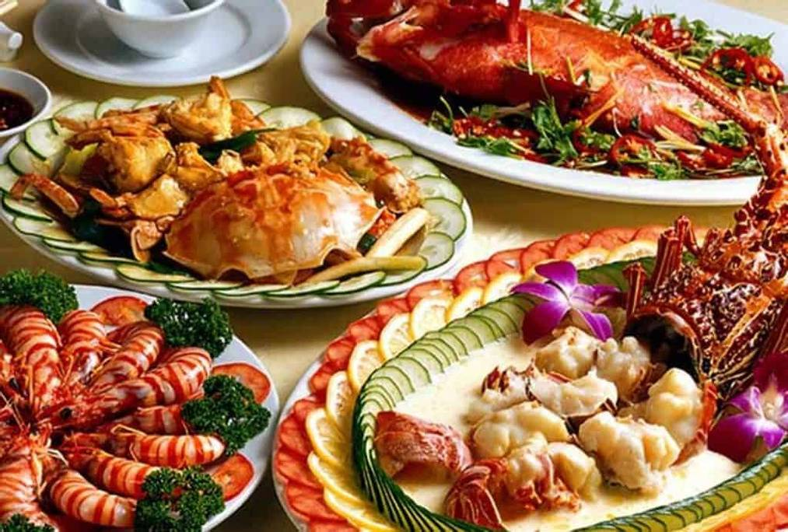
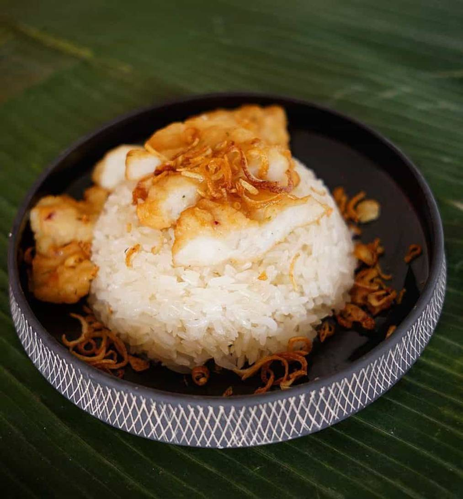
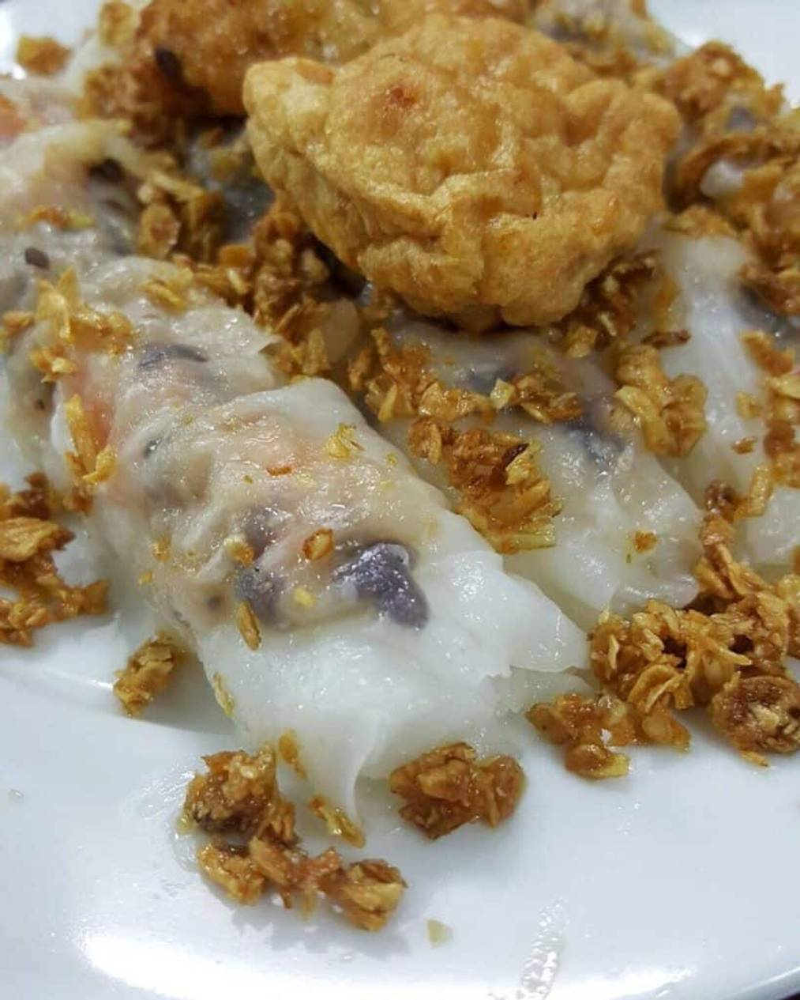
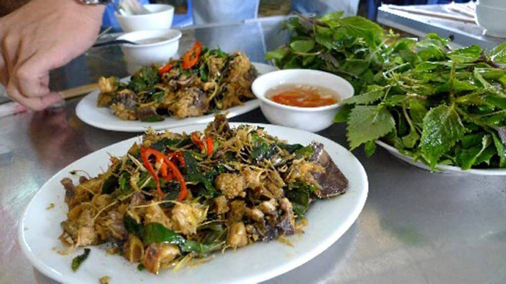
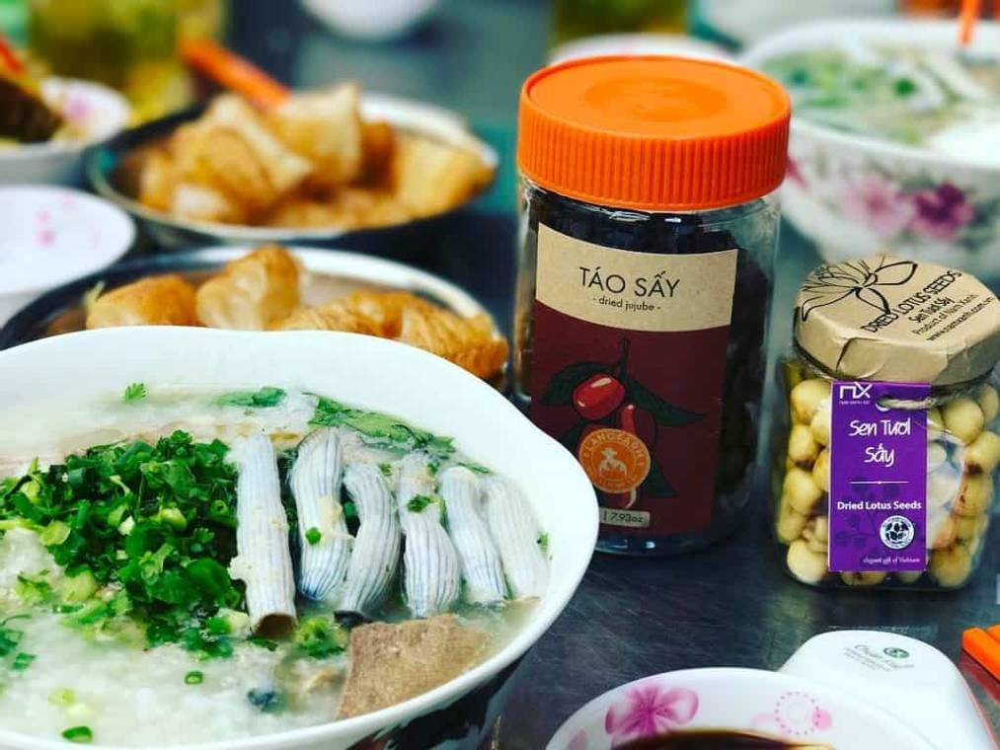
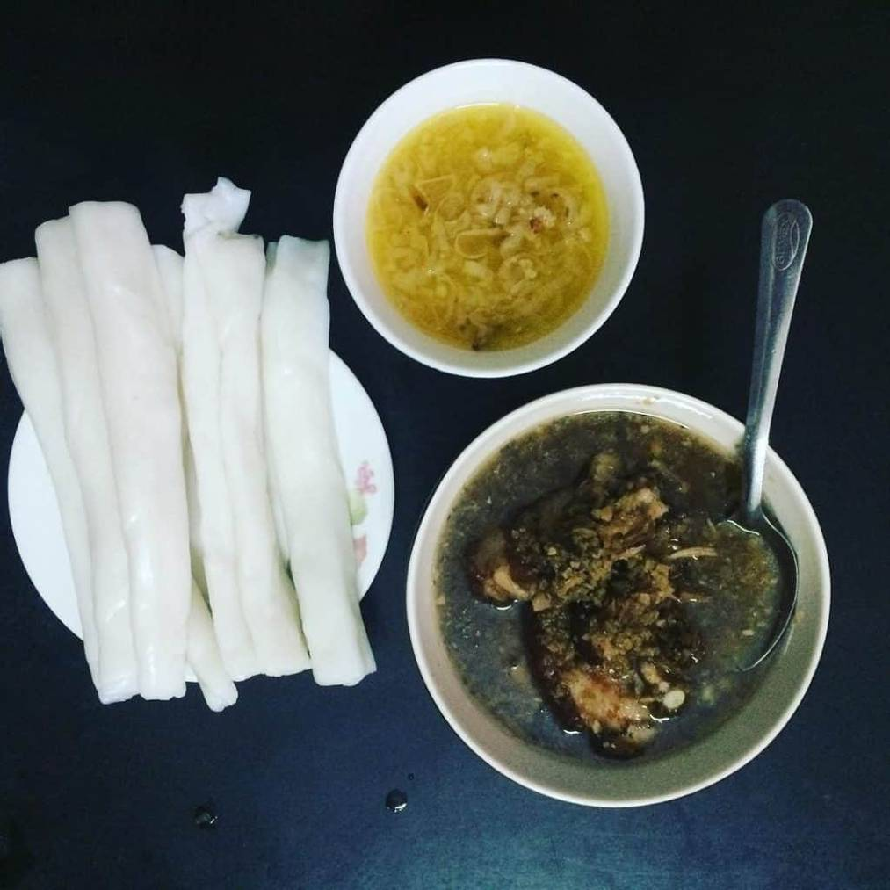
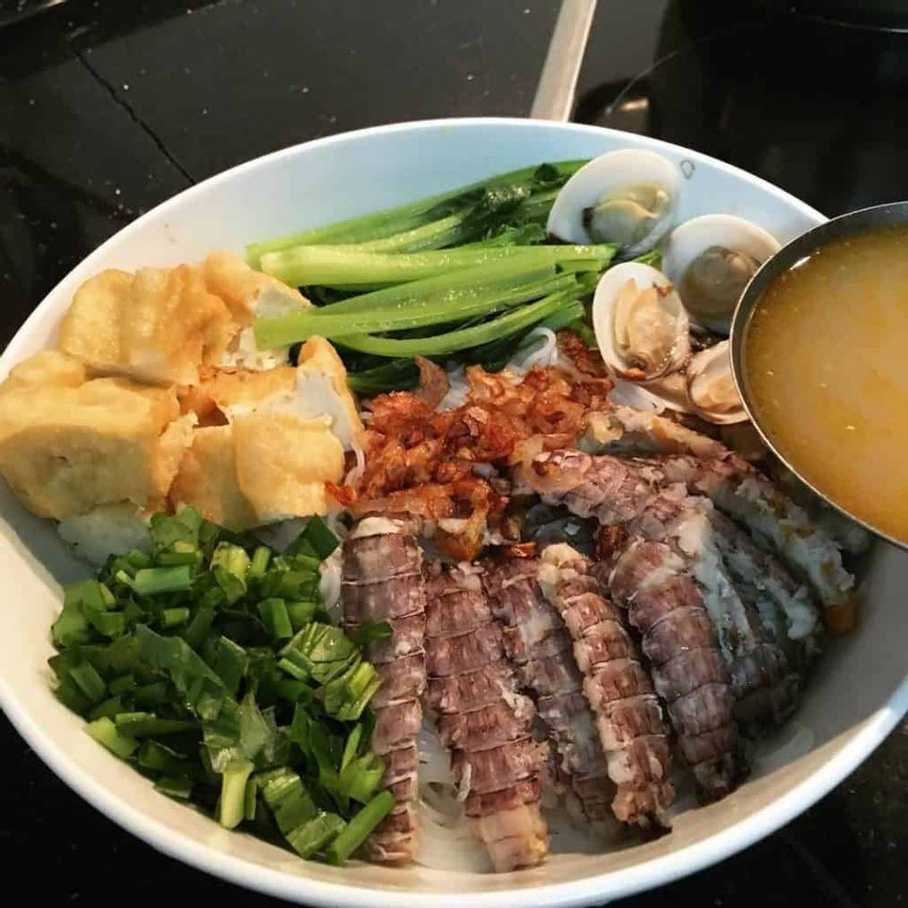
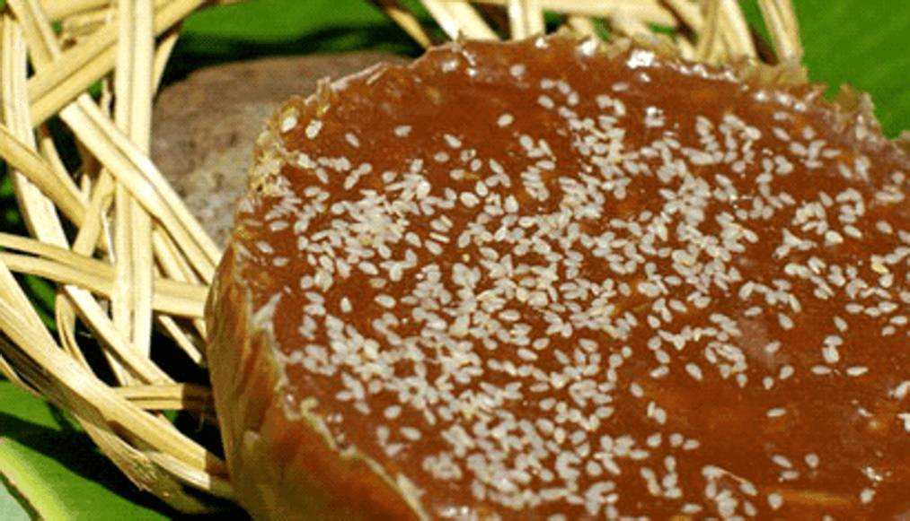

Top 7 món ăn ngon ở Hạ Long
Nhắc tới Hạ Long, ai cũng nghĩ ngay rằng đây là một địa điểm du lịch vô cùng nổi tiếng ở Việt Nam với hàng nghìn hòn đảo kỳ vĩ và phong cảnh thiên nhiên tuyệt đẹp. Thế nhưng bạn đã bao giờ tò mò mình sẽ ăn gì khi đến Hạ Long chưa? Hôm nay, mình sẽ giới thiệu đến các bạn top 10 món ăn vô cùng đặc sắc và hấp dẫn của ẩm thực Hạ Long nhé!
Mình vừa kết thúc chuyến phượt Hạ Long với rất nhiều cảm xúc và trải nghiệm tuyệt vời. Vượt xa cả mong đợi, thiên đường du lịch này không chỉ có nhiều thắng cảnh đẹp đến nao lòng mà còn có cả những món ăn độc đáo mang đậm hương vị của biển. Nếu bạn đang lên kế hoạch cho chuyến đi đến Hạ Long, đừng quên bỏ túi top 10 món ăn ngon ở Hạ Long sau đây nhé!
1.Chả Mực
Nằm trong top 10 của bảng xếp hạng những món ăn ngon nhất châu Á, chả mực là một đặc sản đầy tự hào của người dân nơi đây. Đến Hạ Long, dù đi bất cứ quán ăn nào mình cũng được chủ quán giới thiệu về món ăn này. Từ xa, bạn đã có thể ngửi thấy hương thơm sực nức của chả ngay từ khi còn nằm trên chảo rán. Khi thưởng thức từng miếng chả có màu vàng rộm tự nhiên ấy, bạn sẽ thấy được độ giòn, dai và vị ngon ngọt của mực tươi. Không chỉ vậy, những “hạt lựu” được sắt từ vây và râu mực cứ giòn sần sật trong miệng còn tạo cảm giác khá thú vị và kì lạ. Chả mực ăn kèm với xôi trắng là ngon nhất. Hương thơm của nếp mới hòa quyện với mùi chả tạo nên một hương vị vô cùng hấp dẫn.
2.Bánh cuốn chả mực
Đang lang thang trên một dãy phố cạnh rạp Bạch Đằng, mình bị đứa bạn kéo vào một quán bánh cuốn. Ban đầu mình cũng khá bất ngờ, bánh cuốn thì đâu có xa lạ gì với một cô gái Sài Thành như mình. Chẳng lẽ đến tận đây chỉ để đi ăn bánh cuốn? Nhưng suy nghĩ của mình đã hoàn toàn thay đổi khi ăn xong dĩa bánh cuốn chả mực các bạn ạ. Vẫn là những chiếc bánh cuốn mỏng tang được tráng một cách khéo léo và thịt bằm cùng với nấm và mục nhĩ bên trong, nhưng khi ăn với chả mực lại tạo nên một hương vị vô cùng đặc biệt. Hương thơm của bánh cuốn, ruốc, hành phi hòa quyện với vị tươi ngon của chả mực và nước chấm tạo nên một sự kết hợp vô cùng tuyệt vời!
3.Sam
Sam biển cùng dòng họ với nhà cua, cũng có mai và càng nhưng to hơn. Điều thú vị là những con sam thường đi thành cặp, con cái cõng con đực trên lưng nên khi đánh bắt, người ta thường bắt được một cặp. Mình nghe chủ quán nói ăn một con dễ bị lạnh bụng nên khi chế biến người ta cũng thường làm một cặp để bán. Sam có thể chế biến thành nhiều món ăn khác nhau như sam hấp, sam xào miến, sụn sam nướng, gỏi sam, sam xào xả ớt, trứng sam chiên giòn…
4.Sá sùng
Sá sùng còn được gọi là địa sâm hay giun biển. Mặc dù có giá hơi cao nhưng sá sùng lại được rất nhiều người ưa thích trong danh sách những món ngon nhất định phải thử của ẩm thực Hạ Long. Lúc đầu, mình không dám ăn vì sá sùng nhìn giống y hệt những con giun, sâu hồng hồng rất đáng sợ. Nhưng sau một hồi liều lĩnh ăn thử thì mình đã hiểu vì sao món ăn này lại nổi tiếng đến vậy. Sá sùng có vị rất ngọt và tươi ngon, khi được xào với tỏi thì dậy nên mùi thơm đậm đà hương vị của biển vô cùng hấp dẫn.
5. Bánh gật gù
Loại bánh với cái tên kì lạ này có hình dáng gây nhiều tranh cãi, người thì cho rằng gật gù giống bánh phở, người khác lại cho là bánh ướt. Bánh được cuộn tròn lại thành một cuộn dài, khi cầm lên ăn thì cứ gật lên, gật xuống nên được gọi là bánh gật gù. Bánh ăn kèm với nước mắm chưng mỡ gà và hành phi, có quán còn bán bánh với thịt kho tàu được tẩm ướp kĩ càng.
6. Bún Bề bề
Lại thêm một cái tên vô cùng lạ góp mặt trong danh sách những món ngon của ẩm thực Hạ Long. Thật ra bề bề còn được người miền Nam gọi là con tôm tích. Thịt bề bề tươi sống được lấy từ vùng biển Quảng Ninh. Sau khi sơ chế, người ta lấy vỏ bề bề nấu cùng với xương ống làm nước dùng. Trong một tô bún bề bề còn có các nguyên liệu khác như cải ngọt, cà chua, tôm sắt nõn và các loại rau thơm khác giúp làm tăng hương vị của món ăn.
7. Bánh tài lồng ếp
Bánh này là đặc sản được làm từ bàn tay khéo léo của người Sán Dìu. Thoạt nhìn, bạn sẽ thấy bánh tài lồng ếp khá giống với bánh bò thốt nốt ở miền Tây, chỉ có màu sắc là sậm hơn một chút. Tuy có bề ngoài vô cùng đơn giản nhưng cách làm loại bánh này lại khá công phu và kỹ lưỡng. Vị thơm, ngọt, bùi của bánh tài lồng ếp chắc hẳn sẽ khiến bạn lưu luyến mãi mỗi khi nhớ về Hạ Long.